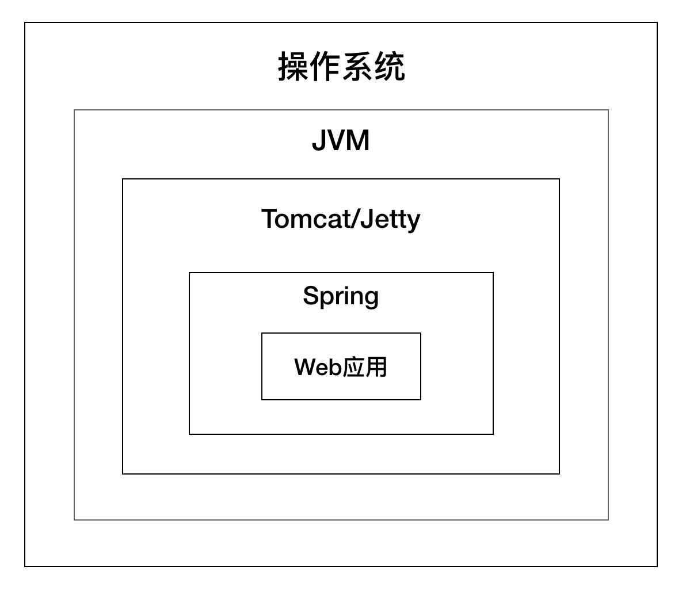
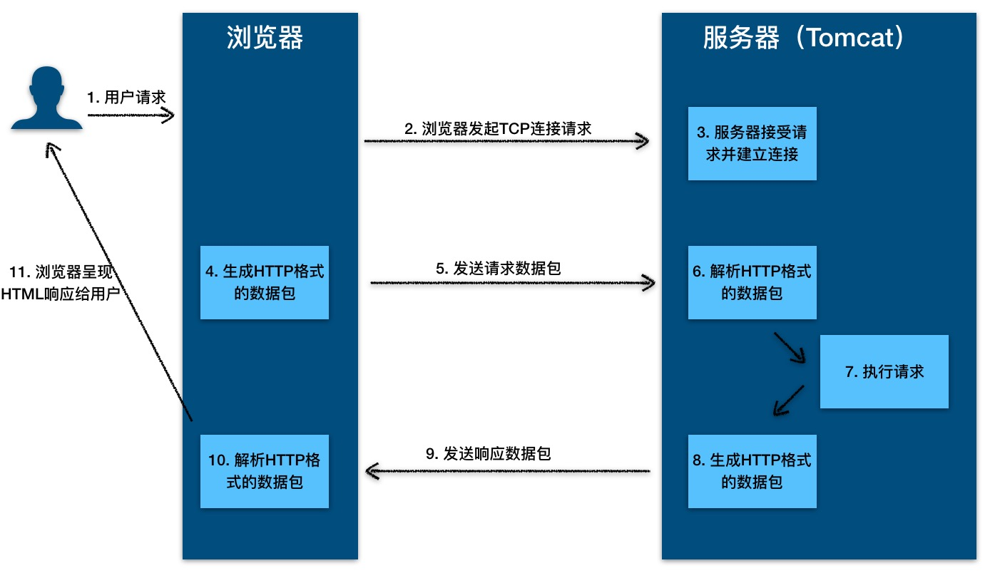
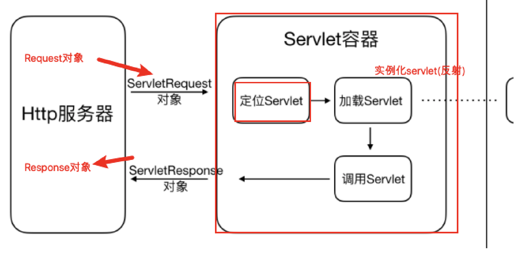
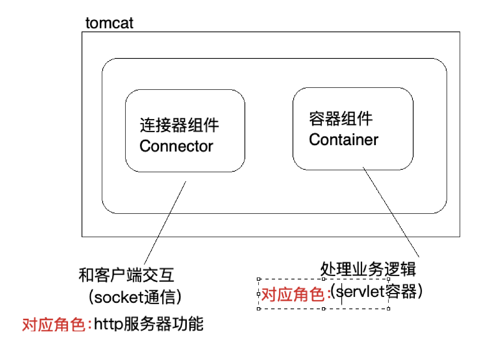

学习备注
1 | session 和 cockie技术底层需要了解一下 |
Tomcat学习基础及前置知识
为什么要学习Tomcat
1 | （1）Servlet 技术是 Web 开发的原点，几乎所有的 Java Web 框架（比如 SpringMVC）都是基于 Servlet 的封装，SpringMVC 应用本身就是一个 Servlet，而 Tomcat 和 Jetty 这样的 Web 容器，负责加载和运行 Servlet。 |

web 概念
（1）软件架构
1. C/S： 客户端/服务器端 ------------> QQ , 360 ....
2. B/S： 浏览器/服务器端 ------------> 京东， 网易 ， 淘宝 ， 传智播客官网
（2）资源分类
1. 静态资源： 所有用户访问后，得到的结果都是一样的，称为静态资源。静态资源可以直接被浏览器解析。
* 如： html,css,JavaScript，jpg
2. 动态资源: 每个用户访问相同资源后，得到的结果可能不一样 , 称为动态资源。动态资源被访问后，需要先转换为静态资源，再返回给浏览器，通过浏览器进行解析。
* 如：servlet/jsp,php,asp....
（3）网络通信三要素
1. IP：电子设备(计算机)在网络中的唯一标识。
2. 端口：应用程序在计算机中的唯一标识。 0~65536
3. 传输协议：规定了数据传输的规则
1. 基础协议：
1. tcp : 安全协议，三次握手。 速度稍慢
2. udp：不安全协议。 速度快
常见的web服务器
1 | 1). webLogic：oracle公司，大型的JavaEE服务器，支持所有的JavaEE规范，收费的。 |
Web 容器是什么？
1 | Sun 公司推出了 Servlet 技术。你可以把 Servlet 简单理解为运行在服务端的 Java 小程序，但是 Servlet 没有 main 方法，不能独立运行，因此必须把它部署到 Servlet 容器中，由容器来实例化并调用 Servlet。 |
- 内嵌方式运行servlet容器?
1 | 比如SpringBoot直接调用Web容器的提供的API去创建一个Web容器（HTTP服务器和Servlet容器），同时你的程序注册一个Servlet到Servlet容器中，比如SpringMVC的DispatcherServlet，这样请求到达时，Servlet容器负责调用你的Servlet。 |
HTTP协议
HTTP 的本质
HTTP 协议是浏览器与服务器之间的数据传送协议。作为应用层协议，HTTP 是基于 TCP/IP 协议来传递数据的（HTML 文件、图片、查询结果等），HTTP 协议不涉及数据包（Packet）传输，主要规定了客户端和服务器之间的通信格式。
HTTP 协议的本质就是一种浏览器与服务器之间约定好的通信格式
- 浏览器
1 | （1）与服务器建立 Socket 连接。 |
HTTP 工作原理

- Tomcat 和 Jetty 为了提高服务的能力和并发度，往往会将自己要做的几个事情并行化，具体来说就是使用多线程的技术。
HTTP 请求响应实例
- 当 HTTP 请求数据到达 Tomcat 后，Tomcat 会把 HTTP 请求数据字节流解析成一个 Request 对象，这个 Request 对象封装了 HTTP 所有的请求信息。接着 Tomcat 把这个 Request 对象交给 Web 应用去处理，处理完后得到一个 Response 对象，Tomcat 会把这个 Response 对象转成 HTTP 格式的响应数据并发送给浏览器。
Cookie 技术
Cookie 本质上就是一份存储在用户本地的文件，里面包含了每次请求中都需要传递的信息。
Session 技术
Session 可以理解为服务器端开辟的存储空间，里面保存了用户的状态
在 Java 中，是 Web 应用程序在调用 HttpServletRequest 的 getSession 方法时，由 Web 容器（比如 Tomcat）创建的。作为 Web 容器，Tomcat 负责创建和管理 Session，并提供了多种持久化方案来存储 Session。
qa：很多公司喜欢绕过容器，直接在应用中将会话数据存入中间件中？
现在的web容器都支持将session存储在第三方中间件（如redis）中，为什么很多公司喜欢绕过容器，直接在应用中将会话数据存入中间件中？
1 | 用Web容器的Session方案需要侵入特定的Web容器，用Spring Session可能比较简单，不需要跟特定的Servlet容器打交道。 |
Servlet规范和Servlet容器
浏览器发给服务端的是一个 HTTP 格式的请求，HTTP 服务器收到这个请求后，需要调用服务端程序来处理，所谓的服务端程序就是你写的 Java 类，一般来说不同的请求需要由不同的 Java 类来处理。
那么问题来了，HTTP 服务器怎么知道要调用哪个 Java 类的哪个方法呢。最直接的做法是在 HTTP 服务器代码里写一大堆 if else 逻辑判断：如果是 A 请求就调 X 类的 M1 方法，如果是 B 请求就调 Y 类的 M2 方法。但这样做明显有问题，因为 HTTP 服务器的代码跟业务逻辑耦合在一起了，如果新加一个业务方法还要改 HTTP 服务器的代码。
那该怎么解决这个问题呢？我们知道，面向接口编程是解决耦合问题的法宝，于是有一伙人就定义了一个接口，各种业务类都必须实现这个接口，这个接口就叫 Servlet 接口，有时我们也把实现了 Servlet 接口的业务类叫作 Servlet。
但是这里还有一个问题，对于特定的请求，HTTP 服务器如何知道由哪个 Servlet 来处理呢？Servlet 又是由谁来实例化呢？显然 HTTP 服务器不适合做这个工作，否则又和业务类耦合了。
于是，还是那伙人又发明了 Servlet 容器，Servlet 容器用来加载和管理业务类。HTTP 服务器不直接跟业务类打交道，而是把请求交给 Servlet 容器去处理，Servlet 容器会将请求转发到具体的 Servlet，如果这个 Servlet 还没创建，就加载并实例化这个 Servlet，然后调用这个 Servlet 的接口方法。因此 Servlet 接口其实是 Servlet 容器跟具体业务类之间的接口。下面我们通过一张图来加深理解。

图的左边表示 HTTP 服务器直接调用具体业务类，它们是紧耦合的。再看图的右边，HTTP 服务器不直接调用业务类，而是把请求交给容器来处理，容器通过 Servlet 接口调用业务类。因此 Servlet 接口和 Servlet 容器的出现，达到了 HTTP 服务器与业务类解耦的目的。
而 Servlet 接口和 Servlet 容器这一整套规范叫作 Servlet 规范。Tomcat 和 Jetty 都按照 Servlet 规范的要求实现了 Servlet 容器，同时它们也具有 HTTP 服务器的功能。作为 Java 程序员，如果我们要实现新的业务功能，只需要实现一个 Servlet，并把它注册到 Tomcat（Servlet 容器）中，剩下的事情就由 Tomcat 帮我们处理了。
Servlet 接口
Servlet 接口定义了下面五个方法：
1 | public interface Servlet { |
- Servlet 规范提供了 GenericServlet 抽象类，我们可以通过扩展它来实现 Servlet。虽然 Servlet 规范并不在乎通信协议是什么，但是大多数的 Servlet 都是在 HTTP 环境中处理的，因此 Servet 规范还提供了 HttpServlet 来继承 GenericServlet，并且加入了 HTTP 特性。这样我们通过继承 HttpServlet 类来实现自己的 Servlet，只需要重写两个方法：doGet 和 doPost。
Servlet 容器
- 工作流程
当客户请求某个资源时，HTTP 服务器会用一个 ServletRequest 对象把客户的请求信息封装起来，然后调用 Servlet 容器的 service 方法，Servlet 容器拿到请求后，根据请求的 URL 和 Servlet 的映射关系，找到相应的 Servlet，如果 Servlet 还没有被加载，就用反射机制创建这个 Servlet，并调用 Servlet 的 init 方法来完成初始化，接着调用 Servlet 的 service 方法来处理请求，把 ServletResponse 对象返回给 HTTP 服务器，HTTP 服务器会把响应发送给客户端。

Web 应用
- Servlet 是怎么注册到 Servlet 容器中的呢？
一般来说，我们是以 Web 应用程序的方式来部署 Servlet 的，而根据 Servlet 规范，Web 应用程序有一定的目录结构，在这个目录下分别放置了 Servlet 的类文件、配置文件以及静态资源，Servlet 容器通过读取配置文件，就能找到并加载 Servlet。
- Web 应用的目录结构大概是下面这样的：
1 | | - MyWebApp |
Servlet 规范里定义了 ServletContext 这个接口来对应一个 Web 应用。Web 应用部署好后，Servlet 容器在启动时会加载 Web 应用，并为每个 Web 应用创建唯一的 ServletContext 对象。你可以把 ServletContext 看成是一个全局对象，一个 Web 应用可能有多个 Servlet，这些 Servlet 可以通过全局的 ServletContext 来共享数据，这些数据包括 Web 应用的初始化参数、Web 应用目录下的文件资源等。由于 ServletContext 持有所有 Servlet 实例，你还可以通过它来实现 Servlet 请求的转发。
扩展机制
- Servlet 规范提供了两种扩展机制：Filter 和 Listener
Filter 是过滤器，这个接口允许你对请求和响应做一些统一的定制化处理，比如你可以根据请求的频率来限制访问，或者根据国家地区的不同来修改响应内容。过滤器的工作原理是这样的：Web 应用部署完成后，Servlet 容器需要实例化 Filter 并把 Filter 链接成一个 FilterChain。当请求进来时，获取第一个 Filter 并调用 doFilter 方法，doFilter 方法负责调用这个 FilterChain 中的下一个 Filter。
Listener 是监听器，这是另一种扩展机制。当 Web 应用在 Servlet 容器中运行时，Servlet 容器内部会不断的发生各种事件，如 Web 应用的启动和停止、用户请求到达等。 Servlet 容器提供了一些默认的监听器来监听这些事件，当事件发生时，Servlet 容器会负责调用监听器的方法。当然，你可以定义自己的监听器去监听你感兴趣的事件，将监听器配置在web.xml中。比如 Spring 就实现了自己的监听器，来监听 ServletContext 的启动事件，目的是当 Servlet 容器启动时，创建并初始化全局的 Spring 容器。
Filter 是干预过程的，它是过程的一部分，是基于过程行为的。
Listener 是基于状态的，任何行为改变同一个状态，触发的事件是一致的。
Servlet 本质上是一个接口，实现了 Servlet 接口的业务类也叫 Servlet。Servlet 接口其实是 Servlet 容器跟具体 Servlet 业务类之间的接口。Servlet 接口跟 Servlet 容器这一整套规范叫作 Servlet 规范，而 Servlet 规范使得程序员可以专注业务逻辑的开发，同时 Servlet 规范也给开发者提供了扩展的机制 Filter 和 Listener。
Tomcat 目录结构
| 目录 | 目录下文件 | 说明 |
|---|---|---|
| bin | / | 存放Tomcat的启动、停止等批处理脚本文件 |
| startup.bat , startup.sh | 用于在windows和linux下的启动脚本 | |
| shutdown.bat , shutdown.sh | 用于在windows和linux下的停止脚本 | |
| conf | / | 用于存放Tomcat的相关配置文件 |
| Catalina | 用于存储针对每个虚拟机的Context配置 | |
| context.xml | 用于定义所有web应用均需加载的Context配置，如果web应用指定了自己的context.xml ，该文件将被覆盖 | |
| catalina.properties | Tomcat 的环境变量配置 | |
| catalina.policy | Tomcat 运行的安全策略配置 | |
| logging.properties | Tomcat 的日志配置文件， 可以通过该文件修改Tomcat 的日志级别及日志路径等 | |
| server.xml | Tomcat 服务器的核心配置文件 | |
| tomcat-users.xml | 定义Tomcat默认的用户及角色映射信息配置 | |
| web.xml | Tomcat 中所有应用默认的部署描述文件， 主要定义了基础Servlet和MIME映射。 | |
| lib | / | Tomcat 服务器的依赖包 |
| logs | / | Tomcat 默认的日志存放目录 |
| webapps | / | Tomcat 默认的Web应用部署目录 |
| work | / | Web 应用JSP代码生成和编译的临时目录 |
Tomcat历史
1） Tomcat 最初由Sun公司的软件架构师 James Duncan Davidson 开发，名称为 “JavaWebServer”。
2） 1999年 ，在 Davidson 的帮助下，该项目于1999年于apache 软件基金会旗下的 JServ 项目合并，并发布第一个版本（3.x）, 即是现在的Tomcat，该版本实现了Servlet2.2 和 JSP 1.1 规范 。
3） 2001年，Tomcat 发布了4.0版本， 作为里程碑式的版本，Tomcat 完全重新设计了其架构，并实现了 Servlet 2.3 和 JSP1.2规范。
目前 Tomcat 已经更新到 10.x版本 ， 但是目前企业中的Tomcat服务器， 主流版本还是 7.x 和 8.x ， 所以本课程是基于 8.5 版本进行讲解。
Tomcat 系统架构
总体架构

- tomcat有两个非常重要的功能需要完成
（1）和客户端浏览器进行交互，进行socket通信，将字节流和Request/Response等对象进行转换
（2）Servlet容器处理业务逻辑

- Tomcat设计了两个核心组件连接器（Connector）和容器（Container）来分别做这两件事情。连接器负责对外交流，容器负责内部处理。
连接器，负责对外交流: 处理Socket连接，负责网络字节流与Request和Response对象的转化;
容器，负责内部处理:加载和管理Servlet，以及具体处理Request请求;